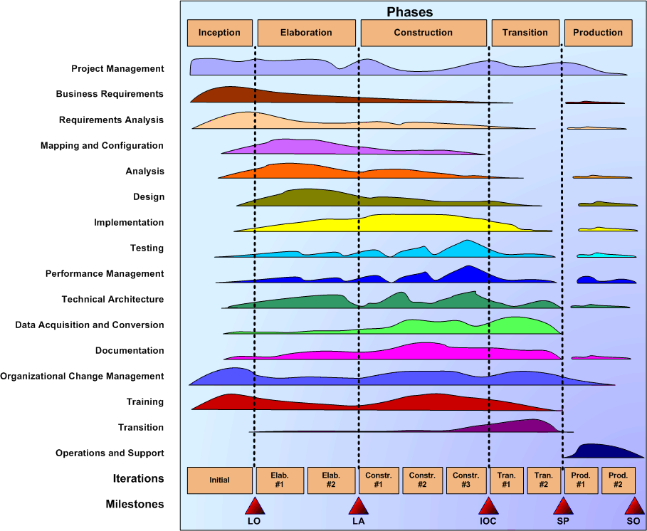
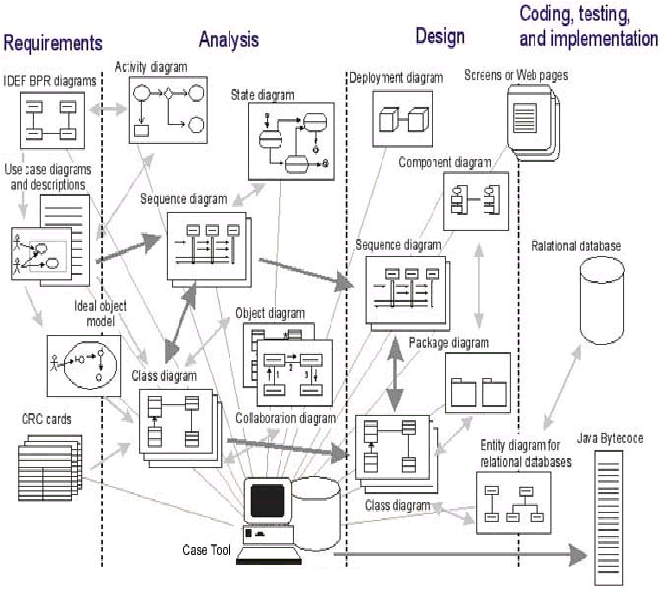
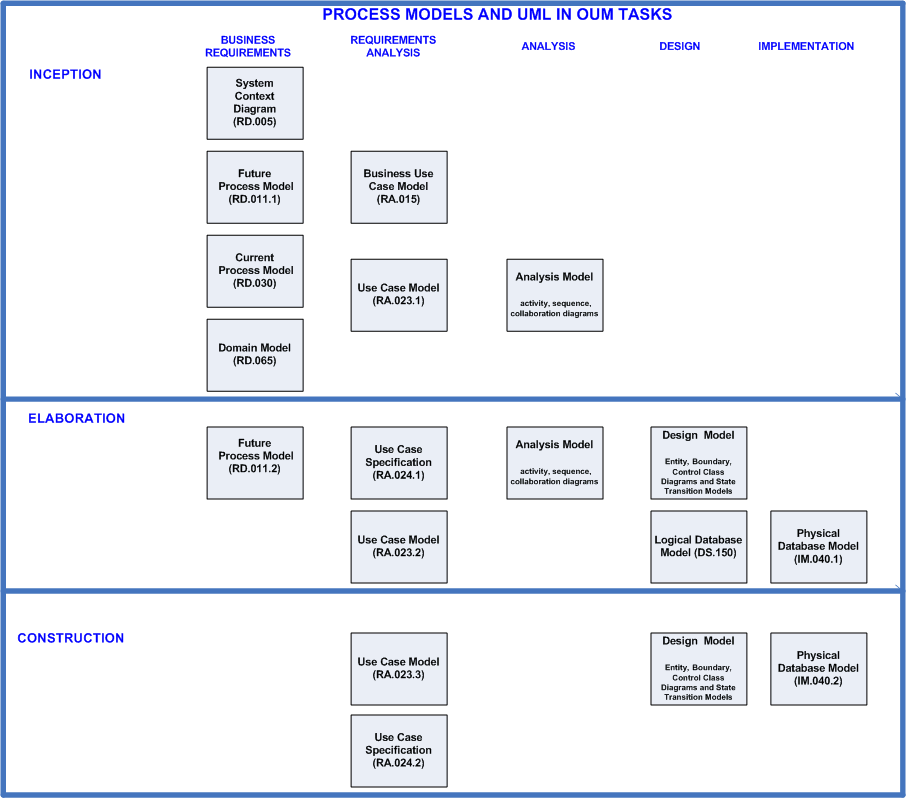

OUM |
Focus Area Overview |
||
Method Navigation |
Current Page Navigation |
||
|
|
||||||||
The Implement focus area provides a framework to develop and implement Oracle-based business solutions with precise development and rapid deployment.
The core framework of the OUM Implement focus area is to be applied to information technology projects based on Oracle Fusion technology and the Oracle product stack. The Implement focus area documents the execution processes. Management processes are documented in the Manage focus area.
The OUM implementation architecture provides a rapid, adaptive, and business-focused, approach to Implementation. These features are embodied within a framework that supports the complete software development and implementation lifecycle.
The diagram below illustrates a typical OUM project, with a typical number of iterations. The relative amount of effort performed in each process, during each iteration is represented by the height of the colored bars for each process. The number of iterations performed and the amount of effort required for a particular project will vary depending upon a number of a factors including scope, technical and programmatic risk, system size, team size, etc. The number of iterations can vary from as few as 3 (for example: 1 - Elaboration, 1 - Construction, 1 - Transition) to as many as 12 or more (for example; 1 - Inception, 3 - Elaboration, 5 - Construction, 2 - Transition, 1 - Production). Projects may also employ multiple production releases, and therefore, multiple iterations of the entire lifecycle to fulfill all of the business requirements.

Timeboxing is a powerful planning and controlling technique for some objectives. For example, it is useful to set timeboxes for use case refinements, for some prototypes, for some architectural discussions, testing, and for post-production support. It is a technique that reduces the risk of "analysis paralysis."
OUM technology implementation employs the Unified Modeling Language (UML) as the basis for modeling business processes, software systems, and technical architectures. UML enables OUM to support modeling of the application architecture, structure and behavior. Today, OUM recognizes the well-proven advantages of an iterative and incremental approach to development and deployment of information systems. As the software industry continues to mature, Oracle will continue to evaluate new techniques for inclusion in OUM. Some techniques from Extreme Programming (XP) and Agile Software Development are already included in OUM. For further reading on Extreme Programming, see Extreme Programming Explained. For further reading on Agile Software Development, see Agile Software Development.
The diagram below illustrates the how the UML models developed during an OUM project are related.

OUM was created with Process Models and UML Models in these Tasks:

OUM was created with the option of Traditional delivery (staffing with Onsite resources), or with Blended Delivery (staffing with Onsite resources and with Offshore Onsite and Offshore Remote resources). Many of the Business Requirements (RD) and Requirement Analysis (RA) tasks are completed during workshops with client involvement. When Blended Delivery channels are used, additional review tasks are added for the offshore resources in the Inception and Elaboration phases. With Blended Delivery, these review tasks with the offshore team are critical.
The creation of more detailed models and specifications also becomes more critical for the onsite team when blended delivery is used. For more information on applying Blended Delivery to an OUM project, see the Blended Delivery guidelines.
OUM organizes the delivery of software implementation projects along several phases - indicators of the progress of the project. Each of these phases culminates in an anchor point milestone. These milestones, adopted as phase gates by the Unified Process and by Oracle Unified Method, were taken directly from the Spiral Model Anchor Point Milestones that were initially developed in a series of workshops by the USC Center for Software Engineering and its government and industrial affiliates. For further reading on milestones, see "Anchoring the Software Process."
The milestones serve to establish exit criteria for each phase and provide an opportunity to evaluate the project's progress and the readiness of the project to commit resources to begin the subsequent phase. Where the Unified Process has four (4) phases: Inception, Elaboration, Construction, and Transition, OUM adds a 5th phase, Production to better cover the software engineering lifecycle.
This section provides a brief overview of the five Oracle Unified Method phases:
The overriding goal of the Inception phase is to have concurrence among all stakeholders on the lifecycle objectives for the project. The Inception phase delivers the Lifecycle Objective Milestone. Therefore, the Inception phase is critical for all projects because the scope of the effort, the high-level requirements and the significant risks must be understood before the project can proceed.
The business objectives, goals, and scope of the project are defined and the project's feasibility is established during requirements gathering activities, which produce the high-level business models. As requirements are defined they are also prioritized in relation to their business benefits. Where applicable and possible, the functionality is partitioned to enable parallel development by separate teams of ambassador users and highly skilled Information Technology professionals. Risks and mitigation strategies are identified. An Iteration Workplan is developed to define the details of the work to be performed in the first Iteration of the Elaboration phase.
For projects focused on enhancements to an existing system, the Inception phase is more brief but is still focused on validating that the project is both worth doing and reasonable.
The goal of the Elaboration phase is to move development of the solution from the scoping and high-level requirements done during the Inception phase to developing the detailed requirements, partitioning the solution, creating and necessary prototypes, and baselining the architecture of the system to provide a stable basis for the design and implementation effort in the Construction phase. The Elaboration phase delivers the Lifecycle Architecture Milestone.
The architecture evolves from the most significant requirements -- those that have a great impact on the architecture of the system -- and an assessment of risk. The stability of the architecture is evaluated through one or more architectural prototypes. During the Elaboration phase, the development team's understanding of the client's business requirements is verified to reduce development risk.
The goal of the Construction phase is to take the solution from detailed requirements models, through configuration of standard packaged software functionality, development and testing of custom components, and integration to a system that is ready for a first release that goes into production, often a limited release and often called a beta release. In short, we complete the development of the application system, validate that all components fit together, and prepare the system for the Acceptance Test and deployment. The Construction phase delivers the Initial Operational Capability Milestone.
In more detail, the Construction Phase clarifies the remaining requirements and completes the development of the system based upon the baseline architecture. In one sense, and particularly for the custom developed components of the overall business solution, the Construction phase is a manufacturing process, where emphasis is placed on managing resources and controlling operations to optimize costs, schedules, and quality. At this point, the management mind-set changes from the development of intellectual property during Inception and Elaboration, to the development of deployable products during Construction and Transition. The application system is completed within a pre-defined number of iterations. Updates are made to each of the models (Use Case Model, Design Model, Architectural Implementation, etc.), as the requirements are progressively refined. For each iteration, every developer works with a given set of prioritized use cases and based on this develop and unit-test the components following the order of the priorities. When the development timebox has reached its end, the developer walks through the changes with the users. The users validate and refine the requirements, and provide MoSCoW priorities for each changed or new requirement. The modified or new requirements are fed back to the requirement models in the business layer. All changed or new requirements are evaluated to make certain there has not been a scope change, and the result provides the input for the next iteration of the partition. Once the team is comfortable with the approach, the formal and sequential nature of development followed by walk through, followed by evaluation can be replaced with a more informal and continuous approach. When all of the planned iterations have been completed for each partition, the complete application system is tested. The tested system is the end goal of the phase.
The goal of the Transition phase is to take the completed solution from installation onto the production system through the Acceptance Test to launch of the live application, open and ready for business. Validate that the system is tested systematically and is available for end users. During this phase, the new system is accepted by the client organization, the organization is made ready for the new system, and the system is put into production and, if the new system replaces an old one, a smooth cutover to the new application is provided. The Transition phase delivers the System Production Milestone.
The Transition phase can span several iterations, and includes testing the new system in preparation for release, and making minor adjustments based on user feedback. At this point in the lifecycle, user feedback should focus mainly on fine-tuning the product, configuration, installation, and usability issues. All the major structural issues should have been resolved earlier in the project lifecycle.
The goal of the Production phase is to operate the newly developed system, assess the success of the system and monitor and address system issues. This includes monitoring the system and acting appropriately to maintaine continued operation, measuring system performance, operating and maintaining supporting systems, responding to help requests, error reports and feature requests by users, and managing the applicable change control process so that defects and new features may be prioritized and assigned to future releases and put into a plan for future enhancements to the application system, as well as determining, developing and implementing required updates.
The Production phase delivers the Sign-Off Milestone.
Each phase should finish with a well-defined milestone. It is important to communicate the milestone to all the stakeholders since it is a point in time where critical decisions should be made and goals evaluated. Each phase has an anchor point milestone that is explained below:
The first key milestone is the Lifecycle Objective Milestone and it is produced at the end of the Inception phase. The following criteria can be used to evaluate this milestone:
The Lifecycle Architecture Milestone is the second key milestone of the project. It is typically expected at the end of the Elaboration phase. At this point, most of the requirements should be analyzed and designed. At this time, the architecture should be stabilized. The following criteria can be used to evaluate this milestone:
The Initial Operational Capability Milestone is the third key project milestone produced at the end of the Construction phase. At this point, a decision is made on whether the application, infrastructure and users are ready to move to operation. The Initial Operation Capability Milestone is also considered a "beta" release.
In order to evaluate this milestone, the following criteria can be used:
The System in Production Milestone is produced at the end of the Transition phase. At this point, the stakeholders decide if the goals and objectives set for the project have been met and if a new increment should begin. In order to evaluate this milestone, the following criteria can be used:
The Sign-Off Milestone is produced at the end of the Production phase (as far as the engagement goes). This is the last key project milestone. At this point all the contractual agreements are closed and staff and physical resources are released or a new project is begun to address additional business requirements within the software system. In addition, all the intellectual property is preserved. In order to evaluate this milestone, the following criteria can be used:
The overall organization of OUM is expressed by a process-based system engineering methodology.
A process is a cohesive set or thread of related tasks that meet a specific project objective. A process results in one or more key outputs. Each process is a discipline that usually involves similar skills to perform the tasks within the process. You might think of a process as a simultaneous sub-project or workflow within a larger development project.
Every full lifecycle involves most if not all of the following processes, whether they are the responsibility of the development team, the users, the IS staff, a third party, or some combination thereof. Most processes overlap in time with others, and are interrelated through common tasks.
This section describes the key OUM processes.
In the Business Requirements process, you define the business needs of the application system. The business requirements for the proposed system or new enhancements are identified, refined and prioritized by a tightly integrated team of empowered ambassador users and experienced analysts. The process often begins from an existing high-level requirements document and a scope document, such as the Project Management Plan, Validated Scope (PJM SM.010). However, it is possible to begin from an agreed on scope and objectives before requirements have been defined.
The Business Requirements process delivers a set of requirements models and a prioritized list of requirements as a basis for system development. Both the models and requirements list are dynamic and may change as the understanding of the team develops with the system.
The main outputs of this process are: the business objectives and goals, the list of functional requirements and the supplemental requirements.
In the Requirements Analysis process, the functional and supplemental requirements identified and prioritized during the Business Requirements process are analyzed further into a Use Case Model that is further refined by adding use case details in order to establish a more precise understanding of the requirements. The Use Case Model is used as the basis for the solution development. This process helps provide structure and shape to the entire solution. The Use Case Model is used to document in detail the requirements of the system in a format that both the client and the developers of the system can easily understand.
The main outputs of this process are the Use Case Model, a prototype of the user interface, and a high-level description of the software architecture.
In the Mapping and Configuration process, the key business data structures and associated values are defined and established within a prototype environment. The business requirements are assessed and mapped to the standard application and system features. A prototype environment is updated with detailed setup parameters, and an iterative series of workshops are conducted in order to validate that the prototype meets the business requirements. Resolutions to any gaps between the business requirements and the standard application features and functions are defined, along with the documentation of detailed setup parameters.
The main outputs of this process are the Application Setups and the Validated Configuration.
During the Analysis process, the captured requirements are analyzed and mapped onto the chosen commercial-off-the-shelf (COTS) product set, if any, to ascertain which requirements can be met directly by configuring the product’s capabilities and which requirements will require extending the product capabilities through the development of custom application software or custom extensions. Beyond product mapping, the purpose of Analysis is to refine and structure the requirements via a conceptual object model, called the Analysis Model. Most simply put, the Analysis Model is the collection of all of the analysis related artifacts, just as the Use Case Model documents the system’s functional requirements. The Analysis Model provides a more precise understanding of the requirements and provides details on the internals of the system. The Analysis Model is described using the language of the developers as opposed to the requirements obtained in the Business Requirements and Requirements Analysis processes where the emphasis is on the functionality of the system expressed in the language of the client. Thus, it contributes to a sound and stable architecture and facilitates an in-depth understanding of the requirements. Many of the outputs produced during the Analysis process describe the dynamics of the system as opposed to the static structure. The Analysis Model is also considered the first cut of the Design Model, since it contains the analysis classes that will be further detailed during the Design process.
The main output of the Analysis process is the Reviewed Analysis Model that includes a set of analysis classes (class diagrams) that realize the use cases. In addition, new software architecture views are added to the Architecture Description initially developed in the Business Requirements process and further enhanced in the Requirements Analysis process.
In the Design process, the system is shaped and formed to meet all functional and supplemental requirements. This form is based on the architecture created and stabilized during the Analysis process. Thus, the outputs produced during Analysis are an important input into this process. Design is the focus during the end of Elaboration phase and the beginning of Construction iterations. The major outputs created in this process ultimately combine to form the Design Model that is used during the Implementation process. The Design Model can be used to visualize the implementation of the system.
The main output of this process is the Reviewed Design Model that includes an object model that describes the design realization of the use cases and design classes that detail the analysis classes outlined in the Analysis Model. In addition, the Architecture Description, initially developed in the Business Requirements process and enhanced in both the Requirements Analysis and Analysis processes, is enriched with the new Module and Execution Views.
Through a number of steps, mostly iterative, the final application is developed within the Implementation process. The results from the Design process are used to implement the system in terms of source code for components, scripts, executables, etc. During this process, developers also implement and perform testing on software components.
Implementation is the main focus of the Construction phase, but it starts early in the Inception phase in order to implement the architecture baseline (trial architecture and prototype). During Transition, it occurs in order to handle any defects or bugs discovered while testing and releasing the system.
The main output of this process is the final iteration build that is ready to be tested. In addition, the High-Level Software Architecture Description initially developed in the Requirements Analysis process is also enriched with the Implementation View to create the Architectural Implementation.
The Testing process is an integrated approach to testing the quality and conformance of all elements of the new system. Therefore, it is closely related to the review tasks in the Quality Management (QM) process in the Manage foucus area and to the definition and refinement of requirements in the Business Requirements process. It addresses mainly functional testing. It also includes systems integration testing for projects with requirements for interfaces to external systems.
Testing activities are a shared responsibility of developers, quality assurance engineers, and ambassador users, working together as an integrated project team. The Testing process presupposes that there is a highly visible user interface from which system events can be driven and results validated. The higher proportion of artifacts that are visible to the ambassador users (for example, user interfaces and reports) the more they will be able to participate in the Testing process.
The objective of the Performance Management process is to proactively define, construct, and execute an effective approach to managing performance throughout the project implementation lifecycle in order to validate that the performance of the system or system components is aligned with the user's requirements and expectations when the system is implemented. Performance Management is not limited to conducting a performance test or an isolated tuning exercise, although both those activities may be part of the overall Performance Management strategy. The requirements that drive Performance Management also impact Technical Architecture (TA) and the two processes are closely related.
The Performance Management team defines the scope of testing and relates it to point-in-time snapshots of the transactions expected in the real production system. Technical analysts create or set up transaction programs to simulate system processing within the scope of the test and populate a volume test database against which to execute the transactions. Once the system and database administrators have created the test environment, the project team executes the test and the final results are documented.
The goal of the Technical Architecture process is to design an information systems architecture to support and realize the business vision. The tasks in the Technical Architecture process identify and document the requirements related to the establishment and maintenance of the application and technical infrastructure environment for the project. Processes and procedures required to implement, monitor and maintain the various environments are established and tested.
The Technical Architecture process specifies elements of the technical infrastructure of the development project. It assumes that the business already has an information system strategy and that these elements fit within that strategy. There must be a sharp focus on the technical infrastructure in a OUM-based solution deployment project. By exposing its business systems to the Web, a business is exposing itself to unpredictable load levels and, sometimes, a hostile security environment. Therefore, the importance of the technical infrastructure cannot be overstated.
The objective of the Data Acquisition and Conversion process is to create the components necessary to extract, transform, transport and load the legacy source data to accommodate the information needs of the new system. The data that is required to be converted is explicitly defined, along with its sources. This data may be needed for system testing, training, and acceptance testing as well as for production. In some cases, it is beneficial to convert (some) data at earlier stages to provide as realistic as possible reviews of the components during the development iterations.
The amount of effort involved with conversion greatly depends on the condition of the data and the knowledge and complexity of the data structure in legacy systems and existing applications. For large projects, where large existing systems will be replaced, and most all of the data needs to be converted, you should consider running this as a separate project in parallel to the development project. In such situations, you need to thoroughly analyze the existing systems, map them to the new data model, and build multiple conversion modules of various complexities. The process includes designing, coding, and testing any conversion modules that are necessary as well as the conversion itself. The cleaning of legacy data is visibly identified as a user and client project staff task so that it can be staffed and scheduled. If data anomalies exist in the current system(s), or there are an unusual number of exceptions, you should recommend data clean-up to the project sponsor.
Quality documentation is a key factor in the transition to production, gaining user acceptance, and maintaining the ongoing business process. The requirements and strategy for this process vary based upon project scope, technology, and requirements.
For projects that include Oracle Application products, the Oracle Application manuals are the foundation of implementation documentation. The Documentation process will develop documentation to augment the standard Oracle Application products manuals with specific information about the organization's custom software extensions and specific business procedures.
The Organizational Change Management process starts at the strategic level with executives and then identifies the particular human and organizational challenges of the technology implementation in order to design a systematic, time-sensitive, and cost-effective approach to lowering risk that is tailored to each organization’s specific needs. In addition to increasing user adoption rates, carefully planning for and managing change in this way allows organization’s to maintain productivity through often-difficult technological transitions. This in turn enables the organization to more easily meet deadlines, realize business objectives, and maximize return on investment.
The objective of the Training process is to make sure that the project team is adequately trained to begin the tasks necessary to start the project and the users are adequately trained to take on the tasks of running the new application system.
The goal of the Transition process is to install the solution (which includes providing installation procedures) and then take it into production. It begins early in the project by defining the specific requirements for cutover to the new application system. It then includes tasks to carry out the elements of that strategy such as developing an Installation Plan, preparing the Production Environment, performing the cutover, and decommissioning any legacy systems.
The goal of the Operations and Support process is to monitor and respond to system problems, upgrade the application to fix errors and performance problems, evaluate the system in production and plan enhancements for increased functionality, improved performance, and tighter security.
The development project does not come to an abrupt end when the team installs the application system into production. In fact, the months following that milestone can determine the real success or failure of the project. Internal auditors have not yet produced the System Evaluation, and users most likely still have a few problems to uncover. There are certain to be requirements with lower priorities that have not been implemented. The Could Have requirements and any remaining Should Haves can now be re-prioritized into an Enhancement Plan, from which upgrades can be defined.
OUM tasks are further refined into activities to better represent the OUM Project lifecycle.
OUM is Oracle's approach to Unified Process. UP is an iterative and incremental approach to developing and implementing software systems. Therefore, any activity (and its tasks) may be iterated. Whether or not to iterate, as well as the number of iterations (times the activity is repeated) within an increment, are variable. Activities may be iterated to either increase the quality of the activity or task outputs to a desired level, to add sufficient level of detail, or to refine and expand them on the basis of user feedback.
Within the OUM phases, the following major activities have been identified:
OUM uses the Manage focus area. You should read the Manage focus area overview to gain a better understanding of this focus area.

Copyright © 2006, 2016, Oracle and/or its affiliates. All rights reserved.